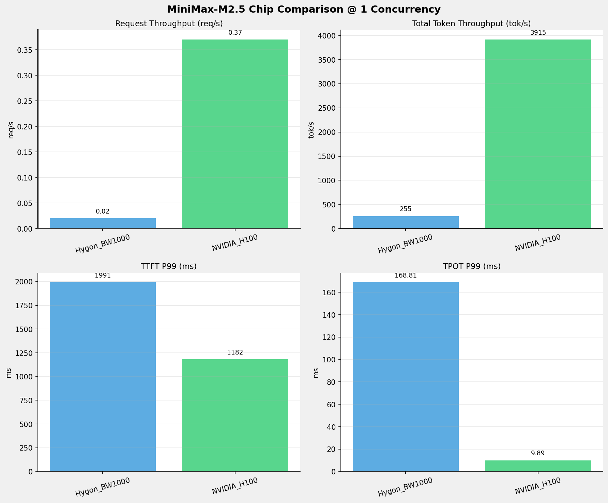
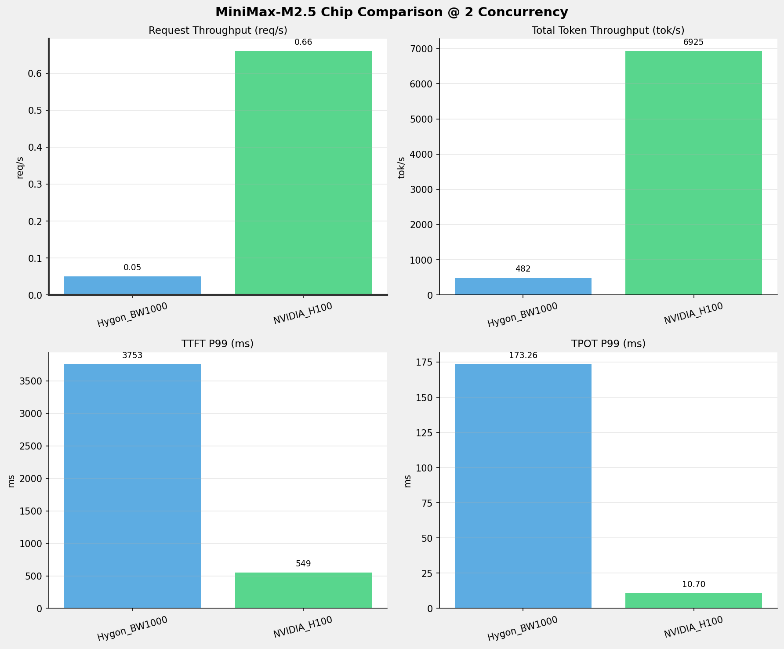
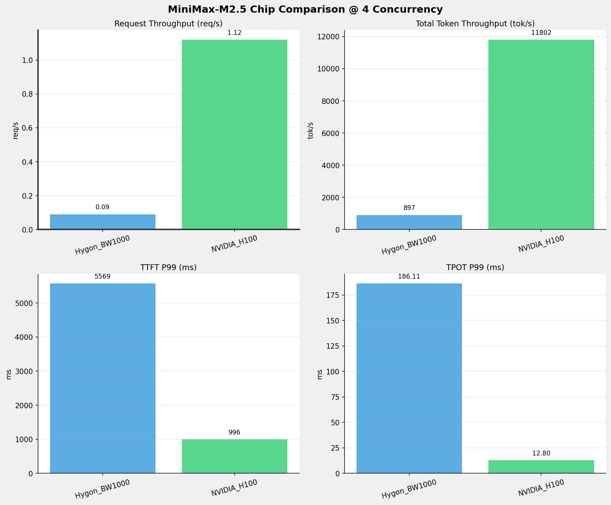
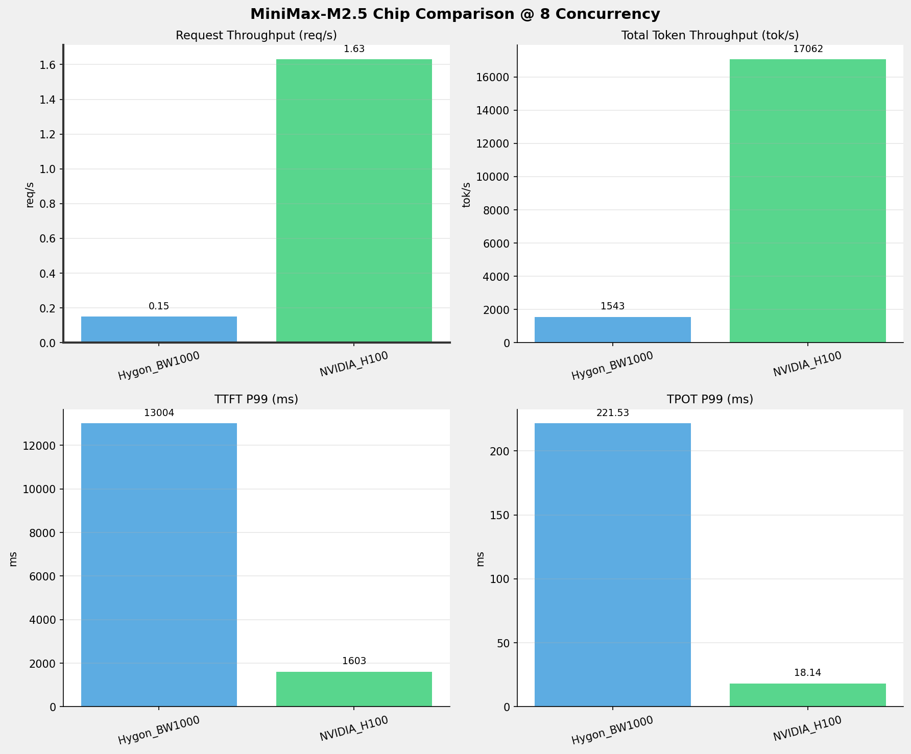
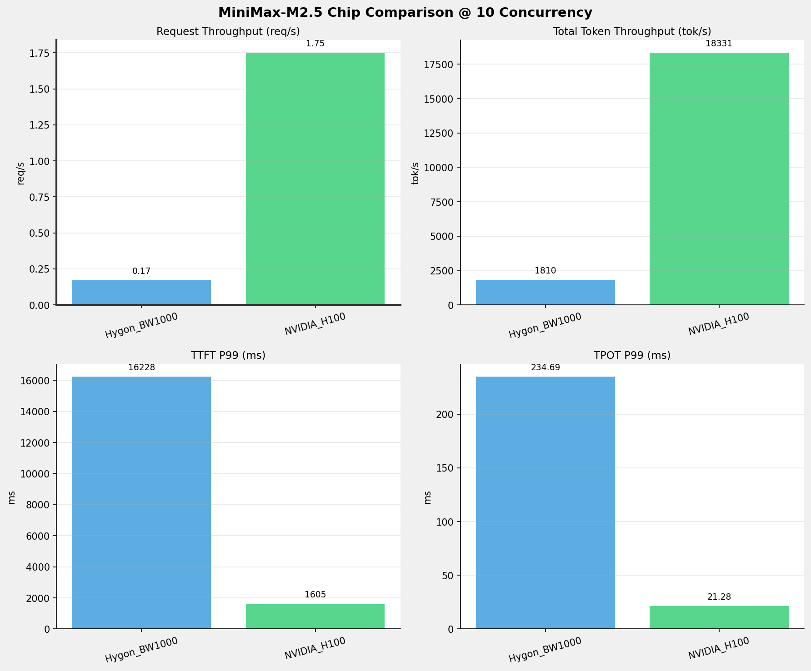
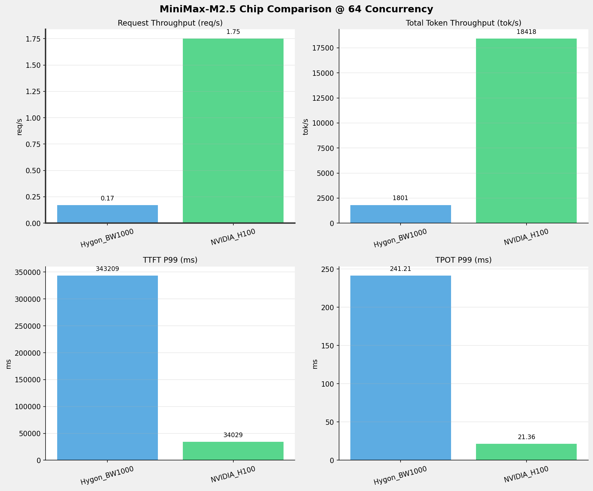
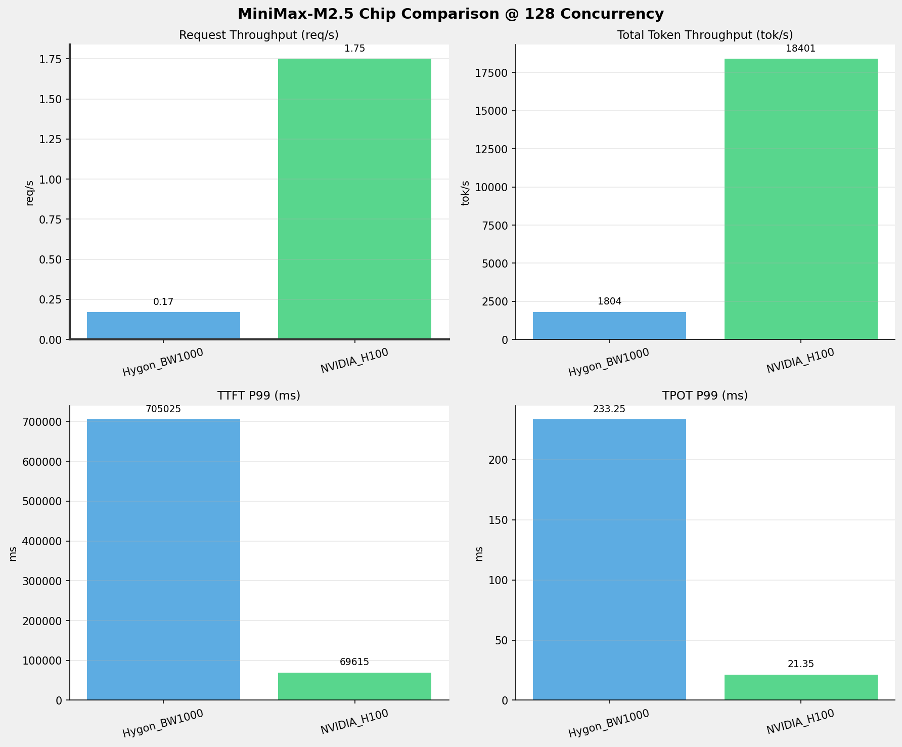
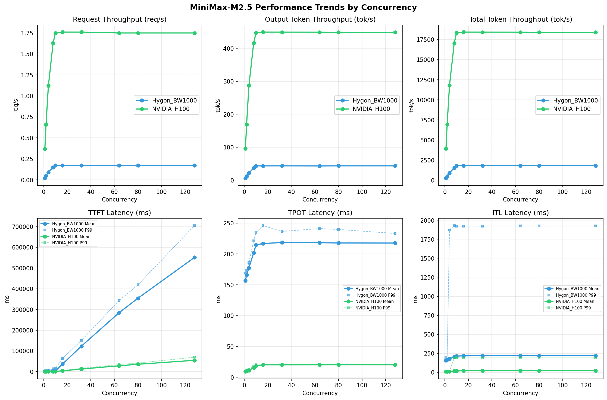

MiniMax-M2.5模型在不同芯片下的benchmark基准测试报告
**测试日期：** 2026-04-17
测试场景
在固定请求数，输入上下文和输出上下文长度下，使用vllm bench serve工具对并发数逐级增加场景的性能基准验证。并对比同一模型在不同芯片环境上的性能指标。
主要采集指标：
| 指标 | 单位 | 含义 |
|---|
| TTFT | ms | Time To First Token，首 token 延迟 |
| TPOT | ms/token | Time Per Output Token，每 token 生成时间 |
| Throughput | tokens/s | 系统总吞吐 |
| QPS | requests/s | 请求吞吐 |
| P50/P95/P99 Latency | ms | 延迟分位数 |
📊 测试概览
| 项目 | 配置 | 备注 |
|---|
| 数据集 | random | |
| 并发数 | 1, 2, 4, 8, 10, 16, 32, 64, 80, 128 | |
| 总请求数 | 320 | |
| 请求输入上下文长度 | 10240（10k） | |
| 请求输出上下文长度 | 256（0.25k） | |
| 模型 | MiniMax-M2.5 | |
| 被测芯片 | Hygon_BW1000, NVIDIA_H100 | |
🤖 芯片和模型配置信息
| 芯片名称 | Hygon_BW1000 | NVIDIA_H100 |
|---|
| model_name | MiniMax-M2.5-bf16 | MiniMax-M2.5 |
| quantization_config | bf16 | FP16 |
| model_size | 427G | 215G |
| max_position_embeddings | 196608 | 196608 |
| temperature | N/A | N/A |
| top_k | N/A | N/A |
| top_p | N/A | N/A |
| transformers_version | 4.46.1 | 4.46.1 |
| vllm_version | 0.11.0+das.opt1.rc2.dtk2604.20260128.g0bf89b0c | 0.15.1 |
| python_version | 3.10.12 | 3.12.3 |
🤖 vLLM启动配置信息
| 参数名称 | Hygon_BW1000 | NVIDIA_H100 |
|---|
| model_name | MiniMax-M2.5-bf16 | MiniMax-M2.5 |
| max-model-len | 196608 | 196608 |
| max-num-seqs | 10 | 10 |
| max-num-batched-tokens | 8192 | 8192 |
| gpu-memory-utilization | 0.95 | 0.85 |
| dtype | bfloat16 | default |
| block_size | default | default |
| dp | 1 | 1 |
| tp | 8 | 8 |
| pp | 1 | 1 |
| enable-export-parallel | True | True |
| enable-auto-tool-choice | True | True |
| tool-call-parser | minimax_m2 | minimax_m2 |
| reasoning-parser | minimax_m2 (不生效) | minimax_m2 |
- Hygon_BW1000: 海光芯片专家并行配置
- NVIDIA_H100: 英伟达H100标准配置
📈 各并发级别性能对比
1 并发
服务基准结果
| 指标 | Hygon_BW1000 | NVIDIA_H100 |
|---|
| 成功请求数 | 320 | 320 |
| 失败请求数 | 0 | 0 |
| 测试持续时间 (s) | 13148.00 | 857.88 |
| 总输入 tokens | 3276748 | 3276800 |
| 总生成 tokens | 80226 | 81920 |
| 请求吞吐量 (req/s) | 0.02 | 0.37 ⭐ |
| 输出 token 吞吐量 (tok/s) | 6.10 | 95.49 ⭐ |
| 峰值输出 token 吞吐量 (tok/s) | 8.00 | 110.00 ⭐ |
| 峰值并发请求数 | 2.00 | 2.00 |
| 总 token 吞吐量 (tok/s) | 255.32 | 3915.14 ⭐ |
首Token延迟 (TTFT)
| 指标 | Hygon_BW1000 | NVIDIA_H100 |
|---|
| 平均 TTFT (ms) | 1958.35 | 321.42 ⭐ |
| 中位 TTFT (ms) | 1964.30 | 306.62 ⭐ |
| P95 TTFT (ms) | 1977.98 | 313.59 ⭐ |
| P99 TTFT (ms) | 1990.88 | 1181.54 ⭐ |
每Token生成时间 (TPOT)
| 指标 | Hygon_BW1000 | NVIDIA_H100 |
|---|
| 平均 TPOT (ms) | 156.69 | 9.25 ⭐ |
| 中位 TPOT (ms) | 156.16 | 9.23 ⭐ |
| P95 TPOT (ms) | 163.40 | 9.23 ⭐ |
| P99 TPOT (ms) | 168.81 | 9.89 ⭐ |
Token间延迟 (ITL)
| 指标 | Hygon_BW1000 | NVIDIA_H100 |
|---|
| 平均 ITL (ms) | 156.23 | 9.23 ⭐ |
| 中位 ITL (ms) | 155.76 | 9.22 ⭐ |
| P95 ITL (ms) | 162.28 | 9.41 ⭐ |
| P99 ITL (ms) | 191.32 | 9.90 ⭐ |
2 并发
服务基准结果
| 指标 | Hygon_BW1000 | NVIDIA_H100 |
|---|
| 成功请求数 | 320 | 320 |
| 失败请求数 | 0 | 0 |
| 测试持续时间 (s) | 6965.73 | 485.01 |
| 总输入 tokens | 3276748 | 3276800 |
| 总生成 tokens | 80297 | 81920 |
| 请求吞吐量 (req/s) | 0.05 | 0.66 ⭐ |
| 输出 token 吞吐量 (tok/s) | 11.53 | 168.90 ⭐ |
| 峰值输出 token 吞吐量 (tok/s) | 15.00 | 207.00 ⭐ |
| 峰值并发请求数 | 4.00 | 4.00 |
| 总 token 吞吐量 (tok/s) | 481.94 | 6925.05 ⭐ |
首Token延迟 (TTFT)
| 指标 | Hygon_BW1000 | NVIDIA_H100 |
|---|
| 平均 TTFT (ms) | 2052.00 | 427.60 ⭐ |
| 中位 TTFT (ms) | 2024.87 | 418.60 ⭐ |
| P95 TTFT (ms) | 2038.41 | 545.11 ⭐ |
| P99 TTFT (ms) | 3752.70 | 549.04 ⭐ |
每Token生成时间 (TPOT)
| 指标 | Hygon_BW1000 | NVIDIA_H100 |
|---|
| 平均 TPOT (ms) | 165.84 | 10.21 ⭐ |
| 中位 TPOT (ms) | 166.01 | 10.22 ⭐ |
| P95 TPOT (ms) | 168.30 | 10.69 ⭐ |
| P99 TPOT (ms) | 173.26 | 10.70 ⭐ |
Token间延迟 (ITL)
| 指标 | Hygon_BW1000 | NVIDIA_H100 |
|---|
| 平均 ITL (ms) | 165.31 | 10.18 ⭐ |
| 中位 ITL (ms) | 158.87 | 9.75 ⭐ |
| P95 ITL (ms) | 164.70 | 9.91 ⭐ |
| P99 ITL (ms) | 168.68 | 10.48 ⭐ |
4 并发
服务基准结果
| 指标 | Hygon_BW1000 | NVIDIA_H100 |
|---|
| 成功请求数 | 320 | 320 |
| 失败请求数 | 0 | 0 |
| 测试持续时间 (s) | 3741.16 | 284.59 |
| 总输入 tokens | 3276748 | 3276800 |
| 总生成 tokens | 80266 | 81920 |
| 请求吞吐量 (req/s) | 0.09 | 1.12 ⭐ |
| 输出 token 吞吐量 (tok/s) | 21.45 | 287.86 ⭐ |
| 峰值输出 token 吞吐量 (tok/s) | 29.00 | 401.00 ⭐ |
| 峰值并发请求数 | 7.00 | 8.00 |
| 总 token 吞吐量 (tok/s) | 897.32 | 11802.07 ⭐ |
首Token延迟 (TTFT)
| 指标 | Hygon_BW1000 | NVIDIA_H100 |
|---|
| 平均 TTFT (ms) | 2185.58 | 694.79 ⭐ |
| 中位 TTFT (ms) | 2038.85 | 666.62 ⭐ |
| P95 TTFT (ms) | 3821.77 | 992.60 ⭐ |
| P99 TTFT (ms) | 5568.67 | 995.93 ⭐ |
每Token生成时间 (TPOT)
| 指标 | Hygon_BW1000 | NVIDIA_H100 |
|---|
| 平均 TPOT (ms) | 177.49 | 11.22 ⭐ |
| 中位 TPOT (ms) | 177.87 | 11.32 ⭐ |
| P95 TPOT (ms) | 183.40 | 12.78 ⭐ |
| P99 TPOT (ms) | 186.11 | 12.80 ⭐ |
Token间延迟 (ITL)
| 指标 | Hygon_BW1000 | NVIDIA_H100 |
|---|
| 平均 ITL (ms) | 176.98 | 11.19 ⭐ |
| 中位 ITL (ms) | 157.22 | 10.08 ⭐ |
| P95 ITL (ms) | 162.59 | 10.33 ⭐ |
| P99 ITL (ms) | 1872.44 | 11.28 ⭐ |
8 并发
服务基准结果
| 指标 | Hygon_BW1000 | NVIDIA_H100 |
|---|
| 成功请求数 | 320 | 320 |
| 失败请求数 | 0 | 0 |
| 测试持续时间 (s) | 2176.31 | 196.85 |
| 总输入 tokens | 3276748 | 3276800 |
| 总生成 tokens | 80442 | 81920 |
| 请求吞吐量 (req/s) | 0.15 | 1.63 ⭐ |
| 输出 token 吞吐量 (tok/s) | 36.96 | 416.15 ⭐ |
| 峰值输出 token 吞吐量 (tok/s) | 59.00 | 680.00 ⭐ |
| 峰值并发请求数 | 15.00 | 16.00 |
| 总 token 吞吐量 (tok/s) | 1542.60 | 17062.16 ⭐ |
首Token延迟 (TTFT)
| 指标 | Hygon_BW1000 | NVIDIA_H100 |
|---|
| 平均 TTFT (ms) | 3297.61 | 961.02 ⭐ |
| 中位 TTFT (ms) | 2089.60 | 1023.59 ⭐ |
| P95 TTFT (ms) | 10888.09 | 1474.23 ⭐ |
| P99 TTFT (ms) | 13004.02 | 1603.43 ⭐ |
每Token生成时间 (TPOT)
| 指标 | Hygon_BW1000 | NVIDIA_H100 |
|---|
| 平均 TPOT (ms) | 201.95 | 15.53 ⭐ |
| 中位 TPOT (ms) | 205.98 | 15.30 ⭐ |
| P95 TPOT (ms) | 212.79 | 18.09 ⭐ |
| P99 TPOT (ms) | 221.53 | 18.14 ⭐ |
Token间延迟 (ITL)
| 指标 | Hygon_BW1000 | NVIDIA_H100 |
|---|
| 平均 ITL (ms) | 201.36 | 15.48 ⭐ |
| 中位 ITL (ms) | 157.25 | 11.93 ⭐ |
| P95 ITL (ms) | 163.19 | 12.35 ⭐ |
| P99 ITL (ms) | 1931.02 | 187.51 ⭐ |
10 并发
服务基准结果
| 指标 | Hygon_BW1000 | NVIDIA_H100 |
|---|
| 成功请求数 | 320 | 320 |
| 失败请求数 | 0 | 0 |
| 测试持续时间 (s) | 1854.59 | 183.23 |
| 总输入 tokens | 3276748 | 3276800 |
| 总生成 tokens | 80517 | 81920 |
| 请求吞吐量 (req/s) | 0.17 | 1.75 ⭐ |
| 输出 token 吞吐量 (tok/s) | 43.42 | 447.09 ⭐ |
| 峰值输出 token 吞吐量 (tok/s) | 73.00 | 759.00 ⭐ |
| 峰值并发请求数 | 16.00 | 18.00 |
| 总 token 吞吐量 (tok/s) | 1810.25 | 18330.76 ⭐ |
首Token延迟 (TTFT)
| 指标 | Hygon_BW1000 | NVIDIA_H100 |
|---|
| 平均 TTFT (ms) | 3593.83 | 1012.23 ⭐ |
| 中位 TTFT (ms) | 2084.97 | 1139.42 ⭐ |
| P95 TTFT (ms) | 10884.20 | 1398.62 ⭐ |
| P99 TTFT (ms) | 16227.56 | 1604.56 ⭐ |
每Token生成时间 (TPOT)
| 指标 | Hygon_BW1000 | NVIDIA_H100 |
|---|
| 平均 TPOT (ms) | 214.72 | 18.48 ⭐ |
| 中位 TPOT (ms) | 219.17 | 17.95 ⭐ |
| P95 TPOT (ms) | 227.12 | 21.21 ⭐ |
| P99 TPOT (ms) | 234.69 | 21.28 ⭐ |
Token间延迟 (ITL)
| 指标 | Hygon_BW1000 | NVIDIA_H100 |
|---|
| 平均 ITL (ms) | 214.01 | 18.42 ⭐ |
| 中位 ITL (ms) | 157.32 | 13.38 ⭐ |
| P95 ITL (ms) | 163.94 | 14.18 ⭐ |
| P99 ITL (ms) | 1924.45 | 190.68 ⭐ |
16 并发
服务基准结果
| 指标 | Hygon_BW1000 | NVIDIA_H100 |
|---|
| 成功请求数 | 320 | 320 |
| 失败请求数 | 0 | 0 |
| 测试持续时间 (s) | 1847.45 | 182.26 |
| 总输入 tokens | 3276748 | 3276800 |
| 总生成 tokens | 80132 | 81920 |
| 请求吞吐量 (req/s) | 0.17 | 1.76 ⭐ |
| 输出 token 吞吐量 (tok/s) | 43.37 | 449.46 ⭐ |
| 峰值输出 token 吞吐量 (tok/s) | 71.00 | 760.00 ⭐ |
| 峰值并发请求数 | 20.00 | 22.00 |
| 总 token 吞吐量 (tok/s) | 1817.04 | 18427.76 ⭐ |
首Token延迟 (TTFT)
| 指标 | Hygon_BW1000 | NVIDIA_H100 |
|---|
| 平均 TTFT (ms) | 36634.82 | 3864.33 ⭐ |
| 中位 TTFT (ms) | 35931.86 | 5018.01 ⭐ |
| P95 TTFT (ms) | 58125.31 | 5362.36 ⭐ |
| P99 TTFT (ms) | 63884.93 | 6358.44 ⭐ |
每Token生成时间 (TPOT)
| 指标 | Hygon_BW1000 | NVIDIA_H100 |
|---|
| 平均 TPOT (ms) | 216.95 | 20.24 ⭐ |
| 中位 TPOT (ms) | 219.89 | 20.22 ⭐ |
| P95 TPOT (ms) | 228.33 | 21.28 ⭐ |
| P99 TPOT (ms) | 246.10 | 21.35 ⭐ |
Token间延迟 (ITL)
| 指标 | Hygon_BW1000 | NVIDIA_H100 |
|---|
| 平均 ITL (ms) | 216.16 | 20.19 ⭐ |
| 中位 ITL (ms) | 157.71 | 13.38 ⭐ |
| P95 ITL (ms) | 164.13 | 15.08 ⭐ |
| P99 ITL (ms) | 1923.89 | 189.48 ⭐ |
32 并发
服务基准结果
| 指标 | Hygon_BW1000 | NVIDIA_H100 |
|---|
| 成功请求数 | 320 | 320 |
| 失败请求数 | 0 | 0 |
| 测试持续时间 (s) | 1847.10 | 182.30 |
| 总输入 tokens | 3276748 | 3276800 |
| 总生成 tokens | 80324 | 81920 |
| 请求吞吐量 (req/s) | 0.17 | 1.76 ⭐ |
| 输出 token 吞吐量 (tok/s) | 43.49 | 449.36 ⭐ |
| 峰值输出 token 吞吐量 (tok/s) | 71.00 | 760.00 ⭐ |
| 峰值并发请求数 | 36.00 | 38.00 |
| 总 token 吞吐量 (tok/s) | 1817.48 | 18423.63 ⭐ |
首Token延迟 (TTFT)
| 指标 | Hygon_BW1000 | NVIDIA_H100 |
|---|
| 平均 TTFT (ms) | 122875.63 | 12498.42 ⭐ |
| 中位 TTFT (ms) | 124891.14 | 12483.01 ⭐ |
| P95 TTFT (ms) | 147416.43 | 15827.75 ⭐ |
| P99 TTFT (ms) | 150615.03 | 15877.21 ⭐ |
每Token生成时间 (TPOT)
| 指标 | Hygon_BW1000 | NVIDIA_H100 |
|---|
| 平均 TPOT (ms) | 218.56 | 20.18 ⭐ |
| 中位 TPOT (ms) | 220.42 | 20.21 ⭐ |
| P95 TPOT (ms) | 227.78 | 20.81 ⭐ |
| P99 TPOT (ms) | 236.50 | 20.85 ⭐ |
Token间延迟 (ITL)
| 指标 | Hygon_BW1000 | NVIDIA_H100 |
|---|
| 平均 ITL (ms) | 217.96 | 20.12 ⭐ |
| 中位 ITL (ms) | 157.77 | 13.40 ⭐ |
| P95 ITL (ms) | 165.32 | 14.81 ⭐ |
| P99 ITL (ms) | 1924.43 | 189.42 ⭐ |
64 并发
服务基准结果
| 指标 | Hygon_BW1000 | NVIDIA_H100 |
|---|
| 成功请求数 | 320 | 320 |
| 失败请求数 | 0 | 0 |
| 测试持续时间 (s) | 1864.45 | 182.36 |
| 总输入 tokens | 3276748 | 3276800 |
| 总生成 tokens | 80461 | 81920 |
| 请求吞吐量 (req/s) | 0.17 | 1.75 ⭐ |
| 输出 token 吞吐量 (tok/s) | 43.16 | 449.23 ⭐ |
| 峰值输出 token 吞吐量 (tok/s) | 71.00 | 760.00 ⭐ |
| 峰值并发请求数 | 68.00 | 70.00 |
| 总 token 吞吐量 (tok/s) | 1800.65 | 18418.46 ⭐ |
首Token延迟 (TTFT)
| 指标 | Hygon_BW1000 | NVIDIA_H100 |
|---|
| 平均 TTFT (ms) | 284382.45 | 28345.01 ⭐ |
| 中位 TTFT (ms) | 308175.63 | 29997.18 ⭐ |
| P95 TTFT (ms) | 336951.30 | 33326.91 ⭐ |
| P99 TTFT (ms) | 343209.29 | 34028.75 ⭐ |
每Token生成时间 (TPOT)
| 指标 | Hygon_BW1000 | NVIDIA_H100 |
|---|
| 平均 TPOT (ms) | 218.23 | 20.25 ⭐ |
| 中位 TPOT (ms) | 219.77 | 20.21 ⭐ |
| P95 TPOT (ms) | 231.26 | 21.30 ⭐ |
| P99 TPOT (ms) | 241.21 | 21.36 ⭐ |
Token间延迟 (ITL)
| 指标 | Hygon_BW1000 | NVIDIA_H100 |
|---|
| 平均 ITL (ms) | 217.55 | 20.19 ⭐ |
| 中位 ITL (ms) | 157.89 | 13.38 ⭐ |
| P95 ITL (ms) | 168.53 | 15.08 ⭐ |
| P99 ITL (ms) | 1925.72 | 189.46 ⭐ |
80 并发
服务基准结果
| 指标 | Hygon_BW1000 | NVIDIA_H100 |
|---|
| 成功请求数 | 320 | 320 |
| 失败请求数 | 0 | 0 |
| 测试持续时间 (s) | 1847.88 | 182.55 |
| 总输入 tokens | 3276748 | 3276800 |
| 总生成 tokens | 80365 | 81920 |
| 请求吞吐量 (req/s) | 0.17 | 1.75 ⭐ |
| 输出 token 吞吐量 (tok/s) | 43.49 | 448.76 ⭐ |
| 峰值输出 token 吞吐量 (tok/s) | 71.00 | 760.00 ⭐ |
| 峰值并发请求数 | 84.00 | 86.00 |
| 总 token 吞吐量 (tok/s) | 1816.74 | 18399.06 ⭐ |
首Token延迟 (TTFT)
| 指标 | Hygon_BW1000 | NVIDIA_H100 |
|---|
| 平均 TTFT (ms) | 354268.91 | 35639.41 ⭐ |
| 中位 TTFT (ms) | 402242.69 | 40443.15 ⭐ |
| P95 TTFT (ms) | 409210.34 | 40507.57 ⭐ |
| P99 TTFT (ms) | 418658.91 | 41499.32 ⭐ |
每Token生成时间 (TPOT)
| 指标 | Hygon_BW1000 | NVIDIA_H100 |
|---|
| 平均 TPOT (ms) | 217.84 | 20.27 ⭐ |
| 中位 TPOT (ms) | 220.16 | 20.23 ⭐ |
| P95 TPOT (ms) | 227.98 | 21.31 ⭐ |
| P99 TPOT (ms) | 239.73 | 21.36 ⭐ |
Token间延迟 (ITL)
| 指标 | Hygon_BW1000 | NVIDIA_H100 |
|---|
| 平均 ITL (ms) | 217.14 | 20.21 ⭐ |
| 中位 ITL (ms) | 157.45 | 13.40 ⭐ |
| P95 ITL (ms) | 164.60 | 15.23 ⭐ |
| P99 ITL (ms) | 1924.81 | 189.49 ⭐ |
128 并发
服务基准结果
| 指标 | Hygon_BW1000 | NVIDIA_H100 |
|---|
| 成功请求数 | 320 | 320 |
| 失败请求数 | 0 | 0 |
| 测试持续时间 (s) | 1861.45 | 182.53 |
| 总输入 tokens | 3276748 | 3276800 |
| 总生成 tokens | 80952 | 81920 |
| 请求吞吐量 (req/s) | 0.17 | 1.75 ⭐ |
| 输出 token 吞吐量 (tok/s) | 43.49 | 448.81 ⭐ |
| 峰值输出 token 吞吐量 (tok/s) | 71.00 | 760.00 ⭐ |
| 峰值并发请求数 | 132.00 | 134.00 |
| 总 token 吞吐量 (tok/s) | 1803.81 | 18401.38 ⭐ |
首Token延迟 (TTFT)
| 指标 | Hygon_BW1000 | NVIDIA_H100 |
|---|
| 平均 TTFT (ms) | 551191.53 | 54641.25 ⭐ |
| 中位 TTFT (ms) | 677657.74 | 66656.46 ⭐ |
| P95 TTFT (ms) | 697287.77 | 68581.20 ⭐ |
| P99 TTFT (ms) | 705024.57 | 69614.62 ⭐ |
每Token生成时间 (TPOT)
| 指标 | Hygon_BW1000 | NVIDIA_H100 |
|---|
| 平均 TPOT (ms) | 217.69 | 20.25 ⭐ |
| 中位 TPOT (ms) | 220.15 | 20.22 ⭐ |
| P95 TPOT (ms) | 227.58 | 21.29 ⭐ |
| P99 TPOT (ms) | 233.25 | 21.35 ⭐ |
Token间延迟 (ITL)
| 指标 | Hygon_BW1000 | NVIDIA_H100 |
|---|
| 平均 ITL (ms) | 216.99 | 20.20 ⭐ |
| 中位 ITL (ms) | 157.95 | 13.39 ⭐ |
| P95 ITL (ms) | 164.61 | 15.04 ⭐ |
| P99 ITL (ms) | 1925.47 | 189.51 ⭐ |
📊 芯片性能柱状图







📈 性能趋势对比图 (所有芯片)

📝 分析总结
1. 吞吐量性能对比
请求吞吐量 (QPS): 在低并发(1-4)场景下，NVIDIA_H100 表现最佳，平均 0.72 req/s；
在中并发(10-8)场景下，NVIDIA_H100 表现最佳，平均 1.71 req/s；
在高并发(128-80)场景下，NVIDIA_H100 表现最佳，平均 1.75 req/s。
Token吞吐量: NVIDIA_H100 在80并发时达到最高吞吐量 18428 tok/s。
2. 首Token延迟 (TTFT) 对比
低并发(1-4): NVIDIA_H100 TTFT最优，平均 909ms
高并发(128-80): NVIDIA_H100 TTFT最优，平均 40255ms
3. Token生成时间 (TPOT) 对比
最优表现: NVIDIA_H100 在各并发下TPOT表现最佳，1并发时仅为 9.89ms
⚠️ 注意: 海光芯片TPOT延迟明显高于NVIDIA，约为 11.2 倍
4. 综合评估
综合性能: NVIDIA_H100 在所有测试场景中综合表现最优
请求吞吐量 (Request Throughput) - 各并发最优
| Concurrency | Best Chip | Performance |
|---|
| 1 | NVIDIA_H100 | 0.37 req/s |
| 2 | NVIDIA_H100 | 0.66 req/s |
| 4 | NVIDIA_H100 | 1.12 req/s |
| 8 | NVIDIA_H100 | 1.63 req/s |
| 10 | NVIDIA_H100 | 1.75 req/s |
| 16 | NVIDIA_H100 | 1.76 req/s |
| 32 | NVIDIA_H100 | 1.76 req/s |
| 64 | NVIDIA_H100 | 1.75 req/s |
| 80 | NVIDIA_H100 | 1.75 req/s |
| 128 | NVIDIA_H100 | 1.75 req/s |
Token总吞吐量 (Total Token Throughput) - 各并发最优
| Concurrency | Best Chip | Performance |
|---|
| 1 | NVIDIA_H100 | 3915 tok/s |
| 2 | NVIDIA_H100 | 6925 tok/s |
| 4 | NVIDIA_H100 | 11802 tok/s |
| 8 | NVIDIA_H100 | 17062 tok/s |
| 10 | NVIDIA_H100 | 18331 tok/s |
| 16 | NVIDIA_H100 | 18428 tok/s |
| 32 | NVIDIA_H100 | 18424 tok/s |
| 64 | NVIDIA_H100 | 18418 tok/s |
| 80 | NVIDIA_H100 | 18399 tok/s |
| 128 | NVIDIA_H100 | 18401 tok/s |
TTFT P99 - 各并发最优
| Concurrency | Best Chip | Latency |
|---|
| 1 | NVIDIA_H100 | 1181.54 ms |
| 2 | NVIDIA_H100 | 549.04 ms |
| 4 | NVIDIA_H100 | 995.93 ms |
| 8 | NVIDIA_H100 | 1603.43 ms |
| 10 | NVIDIA_H100 | 1604.56 ms |
| 16 | NVIDIA_H100 | 6358.44 ms |
| 32 | NVIDIA_H100 | 15877.21 ms |
| 64 | NVIDIA_H100 | 34028.75 ms |
| 80 | NVIDIA_H100 | 41499.32 ms |
| 128 | NVIDIA_H100 | 69614.62 ms |
TPOT P99 - 各并发最优
| Concurrency | Best Chip | Latency |
|---|
| 1 | NVIDIA_H100 | 9.89 ms |
| 2 | NVIDIA_H100 | 10.70 ms |
| 4 | NVIDIA_H100 | 12.80 ms |
| 8 | NVIDIA_H100 | 18.14 ms |
| 10 | NVIDIA_H100 | 21.28 ms |
| 16 | NVIDIA_H100 | 21.35 ms |
| 32 | NVIDIA_H100 | 20.85 ms |
| 64 | NVIDIA_H100 | 21.36 ms |
| 80 | NVIDIA_H100 | 21.36 ms |
| 128 | NVIDIA_H100 | 21.35 ms |
*报告生成时间: 2026-04-17*